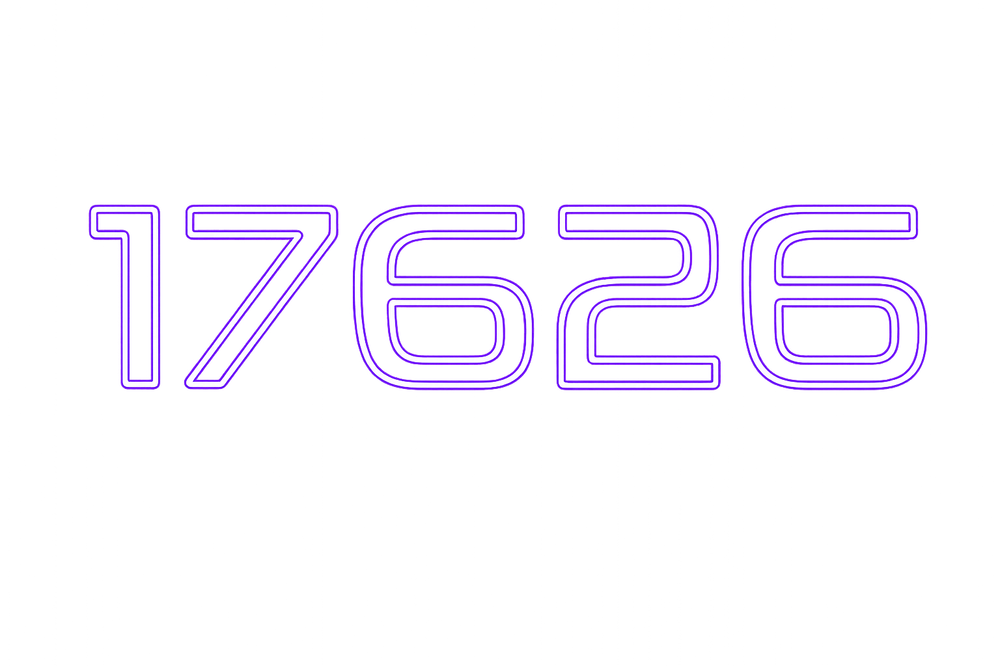
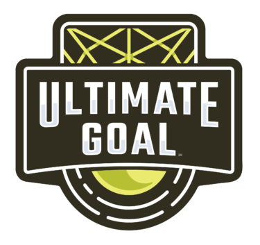
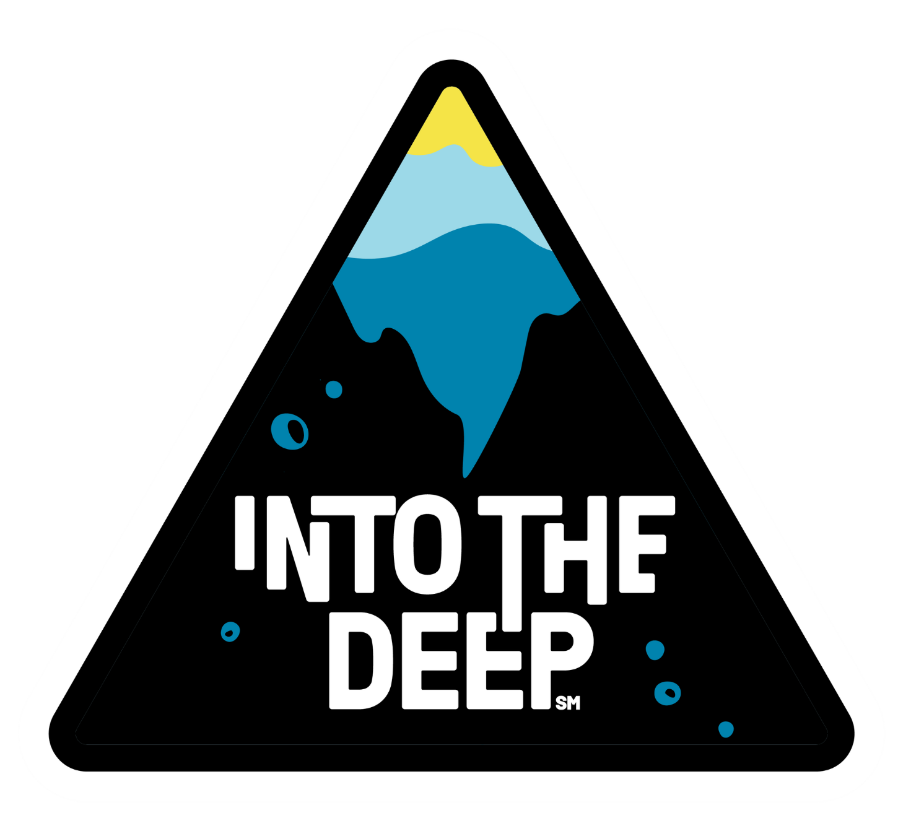
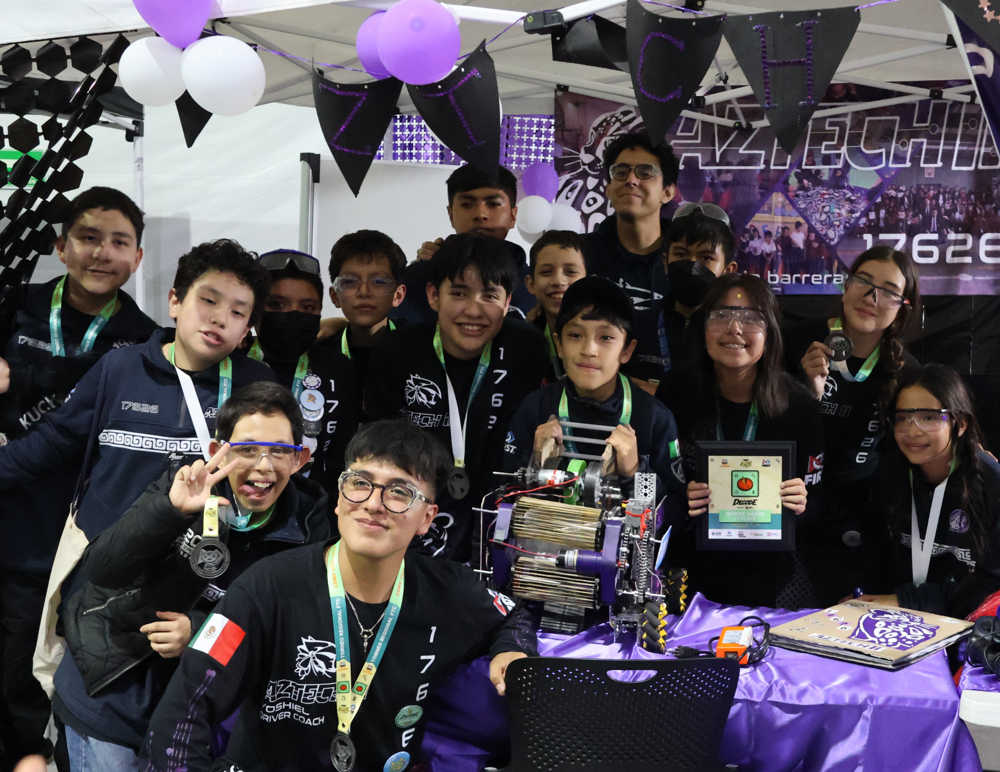
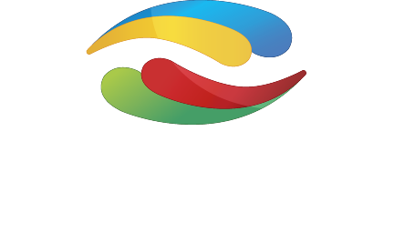
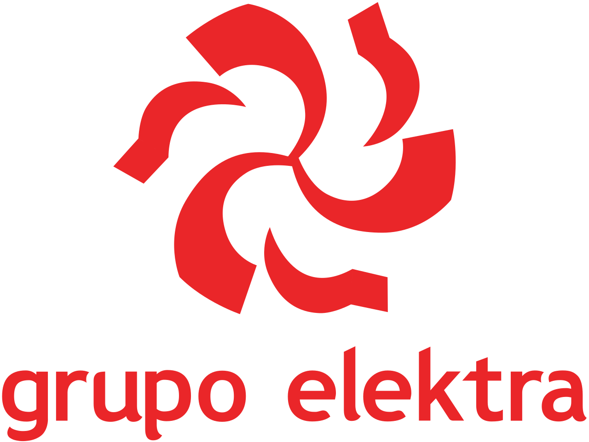

Somos Aztech II (FTC 17626), un equipo de FIRST Tech Challenge en México apasionado por la innovación, la inclusión y el uso intencional de la tecnología. Integramos a personas de orígenes diversos —niños, adolescentes, mujeres, migrantes y personas con discapacidad o en rehabilitación— para desarrollarse en áreas STEM mediante la robótica y generar conciencia sobre la reducción de la huella de carbono.
Creemos que la tecnología debe ser accesible para todos y una herramienta de cambio social, no solo un fin técnico. Nacimos en 2019 dentro de FTC para formar jóvenes líderes capaces de transformar su entorno, bajo una filosofía de crecimiento constante, colaboración y aprendizaje continuo.
Hemos evolucionado temporada a temporada: en Ultimate Goal consolidamos nuestra identidad, y hoy, en Decode (2026), acumulamos logros como el Inspire Award y el Think Award (en dos ocasiones), reflejo de la solidez de nuestra ingeniería y nuestro impacto en la comunidad.
Pasa el cursor sobre cada temporada para ver su imagen, eventos y premios.

Participación en temporada — sin resultados destacados registrados.









Formar líderes integrales en robótica, ingeniería y trabajo en equipo, capaces de desarrollar soluciones innovadoras y proyectos sociales de alto impacto que atiendan problemas reales de nuestra comunidad.
Lograrlo a través de un modelo de formación integral basado en FIRST y STEAM, que promueve la excelencia técnica, la innovación constante, el trabajo colaborativo y el compromiso social, inspirando a más jóvenes a transformar su entorno mediante la ciencia y la tecnología.
Porque creemos en el poder de la robótica y la educación como herramientas para transformar vidas, derribar barreras y generar un cambio positivo, sostenible y significativo en la sociedad.
Integramos a personas de orígenes diversos —niñas y niños, adolescentes, mujeres, migrantes y personas con discapacidad o en rehabilitación— dándoles la oportunidad de desarrollarse en STEM a través de la robótica.
Adoptamos el morado como color insignia, reflejando nuestro compromiso de inspirar a niñas y mujeres a seguir carreras en campos STEM.
Creemos que la tecnología debe ser accesible para todas las personas y usarse como herramienta de cambio social, no solo como un fin técnico en sí mismo.
Llevamos los valores de FIRST más allá de la competencia: promovemos la colaboración, la inclusión, el impacto social y el aprendizaje continuo en cada proyecto e iniciativa, dentro y fuera de la comunidad.
Ahtziri · Regina · Ana
Many · Diego Yael · Dany
Nuestros patrocinadores creen en la misión del equipo y en el impacto de FIRST. Buscamos relaciones recíprocas y de largo plazo.



